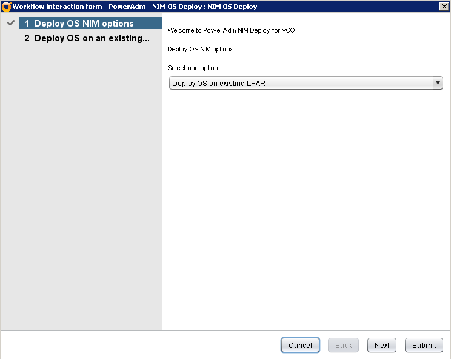
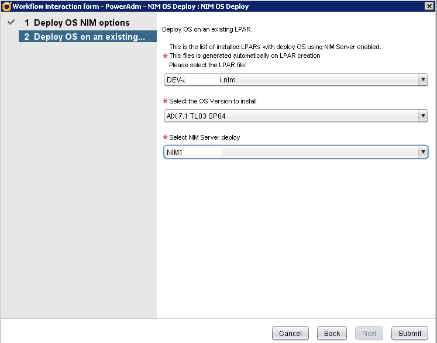

VMware vCenter Orchestrator Interface for PowerAdm
Information
PowerAdm has two examples of workflows and needed Actions to use the vCenter Orchestrator to create and deploy LPARs.
It is easy to install, importing the Action and Workflow (view instalation/configuration steps below).
Contents:
Special Thanks!
- Bruno Costa - Some skype conference teaching me how to use the vCO Action and Workflow!
- Raphael Paiva - My another vCO support!
- Fernando Costa - Fixing my bad english!
LPAR Creation screenshots
LPAR Request

LPAR Config (approval)
Server Configuration

NIM Deploy

Network Config

Confirm Config (approval)

LPAR OS Deploy
Select Action

Select LPAR, OS and NIM Server

Confirm LPAR configuration

Installation/Configuration
TIP: The PowerAdm must be configured and running in text mode/ASCII.
- Login on the VMware vCenter Orchestrator using the vCenter Orchestrator Client.

- Change the view from 'Run' to 'Design'

- Go to the 'Actions'

- Create new module (folder) 'org.poweradm.basic'


- Left clic on new module (folder) 'org.poweradm.basic' and click on 'Import action...'.

- Select all actions in the vCO folder of PowerAdm package.
- getAPIArray
- getNPIV


- Go to the 'Workflows' folder

- Create on 'Custom' folder a new folder named 'PowerAdm'


- Left clic on 'PowerAdm' folder and click on 'Import workflows..'

- Select PowerAdm.workflow

- Select workflow PowerAdm and click on 'Edit'


- In General, change the Attribute Values:
- powerAdmAddres [IP address of your server with PowerAdm]
- powerAdmUser [Username of PowerAdm]
- powerAdmPassword [Password PowerAdm user]
- powerAdmPath [path installation]

- Save and Close

- Continue Anyway (2x)


How it works
PowerAdm has an 'API' with the necessary commands (apimain.py).
The Actions and Workflow execute commands using the SSH.